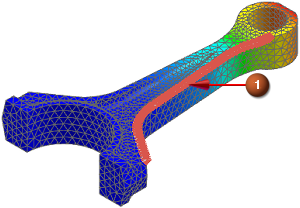

Create a path
 Post-Processing Navigator
Post-Processing Navigator
-
 Post View 1 (under Viewports→Fringe Plots)
Post View 1 (under Viewports→Fringe Plots)
-
 New Path
New Path -
Method
Node ID

-
Pick
Nodes on Edge
-
 (Select the edge shown.)
(Select the edge shown.)

-
OK
The path is listed in the Post-Processing Navigator.
|
Solution 1 |